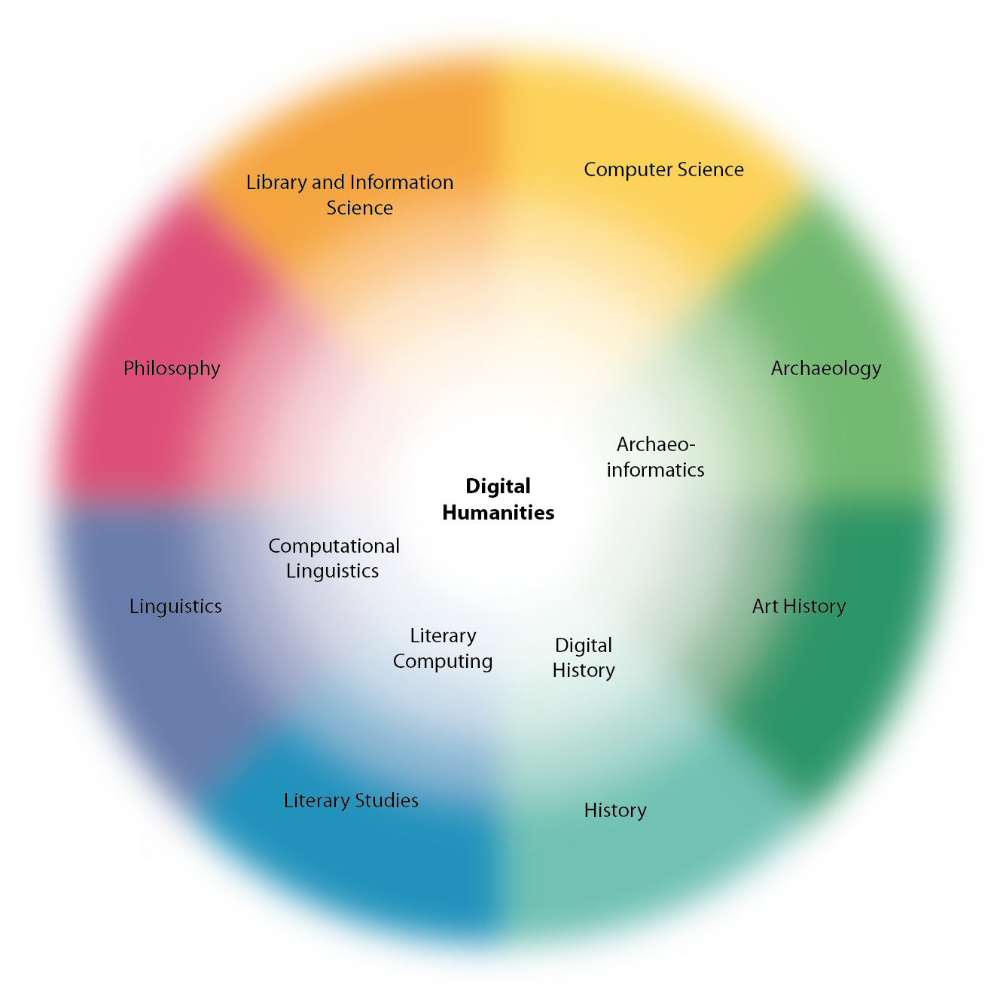
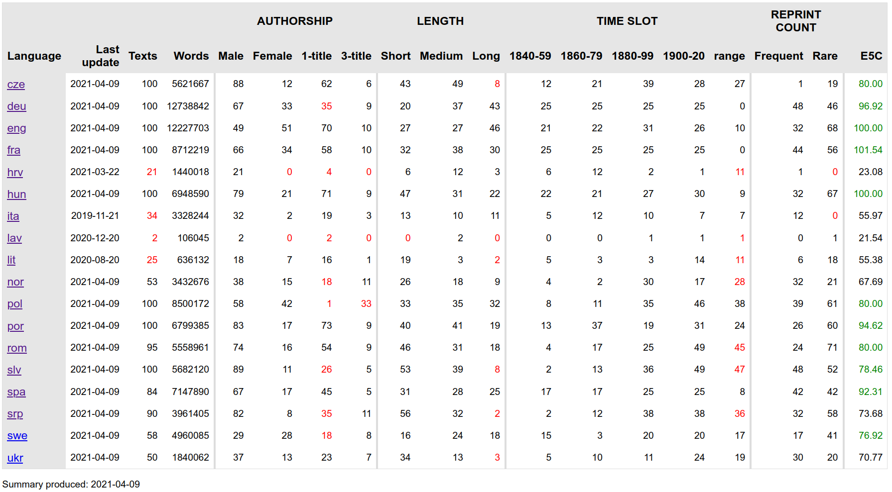

<!doctype html>
<html lang="en">
<head>
<meta charset="utf-8">
<!-- CUSTOMIZE THIS! -->
<title>CA16204</title>
<meta name="author" content="Christof Schöch">
<!-- END -->
<meta name="description" content="Slides">
<meta name="apple-mobile-web-app-capable" content="yes">
<meta name="apple-mobile-web-app-status-bar-style" content="black-translucent">
<meta name="viewport" content="width=device-width, initial-scale=1.0, maximum-scale=1.0, user-scalable=no, minimal-ui">
<link rel="stylesheet" href="css/reveal.css">
<link rel="stylesheet" href="css/theme/simple.css" id="theme">
<!-- Code syntax highlighting -->
<link rel="stylesheet" href="lib/css/zenburn.css">
<!-- Printing and PDF exports -->
<script>
var link = document.createElement( 'link' );
link.rel = 'stylesheet';
link.type = 'text/css';
link.href = window.location.search.match( /print-pdf/gi ) ? 'css/print/pdf.css' : 'css/print/paper.css';
document.getElementsByTagName( 'head' )[0].appendChild( link );
</script>
<!--[if lt IE 9]>
<script src="lib/js/html5shiv.js"></script>
<![endif]-->
</head>

<body>
<div class="reveal">
<div class="slides">
<section data-markdown="" data-separator="^\n-\n" data-separator-vertical="^\n--\n" data-charset="utf-8" data-background-image="img/basics/distantreading_icon-tp.png" data-background-size="100px" data-background-position="right 10px top 10px">
<script type="text/template">

<!-- THIS IS WHERE THE CONTENT GOES! -->
<!-- Any section element inside of this container is displayed as a slide -->

##Digital Humanities and Distant Reading
</img>
<hr/>
<br/>Christof Schöch (Trier, Germany)
<br/>INTELE Webinar, June 2021
<hr/>
<br/>website: http://www.distant-reading.net
<br/>
<hr/>
<a href="http://www.cost.eu"></img></a>


-
# Overview
1. [What is Digital Humanities?](#/2)
1. [What is Distant Reading?](#/3)
1. [What are COST Actions?](#/4)
2. [What is the Distant Reading COST Action about?](#/5)
6. [Conclusion](#/6)


-
# What is Digital Humanities?

--
## Digital X vs. Core-DH 



-
# What is Distant Reading? 

--
## Did you say Distant Reading?
* Many alternative terms <!-- .element: class="fragment fade-in-then-out" data-fragment-index="1" -->
  * Distant Reading
  * Stylometry
  * Digital Literary Stylistics
  * Computational Literary Studies
* A shared conceptual core <!-- .element: class="fragment fade-in-then-out" data-fragment-index="2" -->
  * Research that uses digital text corpora
  * Focus on literary texts in a wide sense
  * Computational and statistical methods of analysis
  * Research questions from literary history and theory
  * Unique methodological research questions<br/>(i.e. data modeling, adaptation of methods, evaluation)


-
# 2. What are COST Actions?

--
## Networking Grants
* Support network and capacity building around specific research topics <!-- .element: class="fragment" data-fragment-index="1" -->
* Networks of European countries and international partners <!-- .element: class="fragment" data-fragment-index="2" -->
* Around 300 Actions are running in parallel (very few of them in the Humanities) <!-- .element: class="fragment" data-fragment-index="3" -->

--
## Some Actions relevant to DH
* [Interedition](http://www.interedition.eu/), 2008-2012
* [Women Writers In History](http://www.womenwriters.nl/index.php/COST_Action), 2009-2013
* [European Network of e-Lexicography](https://www.elexicography.eu/), 2013-2017 
* [Reassembling the Republic of Letters](http://www.republicofletters.net/), 2015-2018
* [NEP4DISSENT - Cultures of Dissent](https://nep4dissent.eu/), 2017-2021
* [Nexus Linguarum](https://nexuslinguarum.eu/), 2019-2023


--
## Some key features
* Action duration is usually 4 years <!-- .element: class="fragment" data-fragment-index="1" -->
* Structured into working groups <!-- .element: class="fragment" data-fragment-index="2" -->
* No funding for staff, only for networking activities <!-- .element: class="fragment" data-fragment-index="3" -->
* Various forms of "networking activities" <!-- .element: class="fragment" data-fragment-index="4" -->


--
## COST networking activities
* Working Group Meetings <!-- .element: class="fragment" data-fragment-index="1" -->
* Training Schools <!-- .element: class="fragment" data-fragment-index="2" -->
* Short Term Scientific Missions <!-- .element: class="fragment" data-fragment-index="3" -->
* Conference Grants <!-- .element: class="fragment" data-fragment-index="4" -->


-
# 2. What is *Distant Reading for European Literary History* about?

--
## Action: Research objectives
* Resources: Build a multilingual reference collection of European novels ("ELTeC") <!-- .element: class="fragment" data-fragment-index="1" -->
* Methods: Explore, evaluate, adapt and share computational methods of text analysis for ELTeC <!-- .element: class="fragment" data-fragment-index="2" -->
* Theory: Think through consequences of digital data and methods for literary history and theory  <!-- .element: class="fragment" data-fragment-index="3" -->

--
## Action: Networking objectives
* Bring together corpus linguists, computational linguists, digital literary scholars, literary historians and theorists <!-- .element: class="fragment" data-fragment-index="1" -->
* Spread and share competencies in the three areas above among these groups <!-- .element: class="fragment" data-fragment-index="2" -->
* Support relevant collaborative grant proposals on the national and European levels <!-- .element: class="fragment" data-fragment-index="3" -->

--
## Current Network
* 32 countries are involved 
* 200+ scholars are participating
* several spin-off projects
* a follow-up project (CLS INFRA)


--
## Key Output: ELTeC
<a href="img/eltec-overview.png"></img></a>
* European Literary Text Collection (ELTeC)
* Comparable sets of novels for at least 10 European languages
* Each set: 100 novels published between 1840 and 1920
* Currently: over 1300 novels published! 
* https://distantreading.github.io/ELTeC/
* ELTeC is a key output and basis for further work! 

    

-
# Time for questions! 

--
## To learn more: websites
* http://distant-reading.net/
* https://github.com/distantreading
* http://www.cost.eu/COST_Actions/ca/CA16204
* https://twitter.com/DistantReading

--
## To learn more: readings
<small>
* Burnard, Lou, Schoöch, and Odebrecht. “In Search of Comity: TEI for Distant Reading.” November 1, 2019. https://doi.org/10.5281/zenodo.3552489.
* Byszuk, Joanna, Michał Woźniak, Mike Kestemont, Albert Leśniak, Wojciech Łukasik, Artjoms Šeļa, and Maciej Eder. “Detecting Direct Speech in Multilingual Collection of 19th Century Novels.” In Proceedings of LT4HALA 2020-1st Workshop on Language Technologies for Historical and Ancient Languages, edited by Rachele Sprungoli and Marco Passarotti, https://lrec2020.lrec-conf.org/media/proceedings/Workshops/Books/LT4HALAbook.pdf:100–104. Paris: European Language Resources Association (ELRA), 2020.
* Cinková, Silvie, et al. “Evaluation of Taggers for 19th-Century Fiction.” DH_Budapest_2019, edited by Gábor Pálko, ELTE, 2019, http://elte-dh.hu/dh_budapest_2019-abstract-booklet/.
* Evert, Stefan, Fotis Jannidis, Thomas Proisl, Steffen Pielström, Thorsten Vitt, Christof Schöch, and Isabella Reger. “Understanding and Explaining Distance Measures for Authorship Attribution.” Digital Scholarship in the Humanities, 2017. https://academic.oup.com/dsh/article-pdf/32/suppl_2/ii4/21298943/fqx023.pdf.
* Patras, Roxana, Ioana Galleron, Camelia GRĂDINARU, Ioana Lionte, and Lucreţia Pascaru. “The Splendors and Mist(Eries) of Romanian Digital Literary Studies: A State-of-the-Art Just before Horizons 2020 Closes Off.” Hermeneia 23 (2019): 207–22.
* Stankovic, Ranka, Francesca Frontini, Tomaž Erjavec, and Carmen Brando. “Named Entity Recognition for Distant Reading in Several European Literatures.” In DH_Budapest_2019, edited by Gábor Pálko. Budapest: ELTE, 2019. http://elte-dh.hu/dh_budapest_2019-abstract-booklet/.
* Schöch, Christof; Roxana Patras; Tomaž Erjavec; Diana Santos: "Creating the European Literary Text Collection (ELTeC): Challenges and Perspectives", submitted. 

</small>

--
<br/>
<br/>
<br/>
## Danke! · Thank you! · Merci! · Ačiū!
<br/>
<br/>
<br/>
<br/>
<br/>
<br/>
<br/>
<hr/>
<p><a href="https://creativecommons.org/licenses/by/4.0/">CC-BY 4.0</a><br/></p>
<hr/>
<br/>
<br/>
</script>
</section>


<!-- DON'T TOUCH UNLESS YOU KNOW WHAT YOU'RE DOING :-) -->
</div>
<script src="lib/js/head.min.js"></script>
<script src="js/reveal.js"></script>
<script>
// Full list of configuration options available at:
// https://github.com/hakimel/reveal.js#configuration
Reveal.initialize({
    controls: true,
    progress: true,
    history: true,
    center: false,
    transition: 'slide', // none/fade/slide/convex/concave/zoom
    // Optional reveal.js plugins
    dependencies: [
        { src: 'lib/js/classList.js', condition: function() { return !document.body.classList; } },
        { src: 'plugin/markdown/marked.js', condition: function() { return !!document.querySelector( '[data-markdown]' ); } },
        { src: 'plugin/markdown/markdown.js', condition: function() { return !!document.querySelector( '[data-markdown]' ); } },
        { src: 'plugin/highlight/highlight.js', async: true, callback: function() { hljs.initHighlightingOnLoad(); } },
        { src: 'plugin/zoom-js/zoom.js', async: true },
        { src: 'plugin/notes/notes.js', async: true }
        ]
    });
</script>
</body>
</html>
